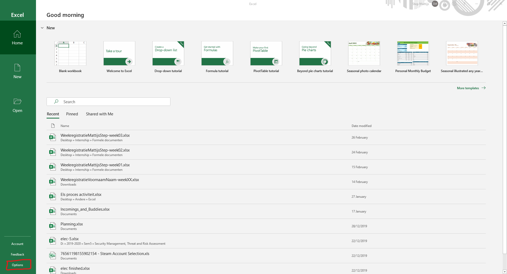

Making a form using Excel VBA In this tutorial I will show you how to use forms in Excel and how these can be used within Excel.
-
Part 1: Enabling Excel VBA
The first part is simple. We will enable the developer tab in Excel so that we can use Macro's and Excel VBA. As seen in the two pictures below you can enable Excel VBA in the setting of Excel. Then in Customize Ribbon you have the option to unhide the Developer tab. Now if you look at your Excel their will be an extra tab.
In this tab you will find Visual Basic which is what we will be using for the forms. Here you can also insert buttons among other things.
-
Part 2: Creating a UserForm
Ok once you are in Excel VBA you can create a new form using the insert and then UserForm. The empty UserForm is created. If you open the context menu on your form you can view the properties of the form. Here you can change the name of the form, the caption and more. For filling the UserForm we can use the ToolBox. If you clicked this away you can get it back using the View and then Toolbox feature. In this example I used labels, text fields, combo fields and buttons.


-
Part 3: Changing properties
In this part we are going to change the properties of all the elements so that we can later on use them easier. First change the name of all the fields where you will have input. Txt_FirstName Txt_LastName Txt_Address Txt_City Txt_PostalCode Combo_Country Combo_CustomerType Txt_Notes These are the fields I will use for the tutorial. If you have combo fields you can use dynamic ranges to supply possible choices.
-
Part 4: Making a dynamic Range
Dynamic range ensures that the list you give can be alerted and you will not have to change the whole excel because of it. First we will need a value of how long that list is. For that we can use the function COUNTA. here you supply what should be in the list but the end value of the range can be much bigger. This allows you to in the future add or delete items on that list and the dynamic list will still be working. =COUNTA($A$2:$A$9998) Then we will use the name manager located in the formula tab to create or dynamic range. Dyn_Countries =OFFSET(ExtraLists!$A$2,0,0,ExtraLists!$D$2,1) For the offset function you first need a starting point then you tell it how you want to change it. Here as the third argument I give the COUNTA function so that it know how many entries their are in the list.
-
Part 5: Creating Excel Module
For testing your dynamic range I suggest you create a new Excel Module. In this module you can write extra functions that can help your document. Sheets("ExtraLists").Range("Dyn_Countries").Select This function will select the range that you have defined.

-
Part 6: Connecting Buttons to the User Form
In the module you can make an extra function that is going to connect a button to the User Form. AddCustomer.Show This simple functions will show the User Form. In the User Form you can also click on a button that you have placed their to add some code. For my cancel button I would want it to close the User Form. Unload AddCustomer This function does exactly that. Test this out so that you can enter your User Form and Exit it using a Cancel button.
-
Part 7: Coding the user Form
If you want to navigate more quickly through the User Form use the TabIndex property to make it so that if you tab it takes you to the next field. Private Sub Button_Continue_Click() TargetRowCustomer = Sheets("ExtraLists").Range("F2") + 1 If ((Txt_FirstName <> "") And (Txt_LastName <> "") And (Txt_Address <> "") And (Txt_City <> "") And (Txt_PostalCode <> "") And (Combo_Country <> "") And (Combo_CustomerType <> "")) Then Sheets("CustomerList").Range("Customer_start").Offset(TargetRowCustomer, -1).Value = TargetRowCustomer Sheets("CustomerList").Range("Customer_start").Offset(TargetRowCustomer, 0).Value = Txt_FirstName Sheets("CustomerList").Range("Customer_start").Offset(TargetRowCustomer, 1).Value = Txt_LastName Sheets("CustomerList").Range("Customer_start").Offset(TargetRowCustomer, 2).Value = Txt_Address Sheets("CustomerList").Range("Customer_start").Offset(TargetRowCustomer, 3).Value = Txt_City Sheets("CustomerList").Range("Customer_start").Offset(TargetRowCustomer, 4).Value = Txt_PostalCode Sheets("CustomerList").Range("Customer_start").Offset(TargetRowCustomer, 5).Value = Combo_Country Sheets("CustomerList").Range("Customer_start").Offset(TargetRowCustomer, 6).Value = Combo_CustomerType Sheets("CustomerList").Range("Customer_start").Offset(TargetRowCustomer, 7).Value = Txt_Notes Unload AddCustomer Else Dim errorlist(1 To 7) As String If (Txt_FirstName = "") Then errorlist(1) = "First Name" If (Txt_LastName = "") Then errorlist(2) = "Last Name" If (Txt_Address = "") Then errorlist(3) = "Address" If (Txt_City = "") Then errorlist(4) = "City" If (Txt_PostalCode = "") Then errorlist(5) = "Postal Code" If (Combo_Country = "") Then errorlist(6) = "Country" If (Combo_CustomerType = "") Then errorlist(7) = "Custromer Type" MsgBox "Pleas fill in the following:" + vbNewLine + errorlist(1) + " - " + errorlist(2) + " - " + errorlist(3) + " - " + errorlist(4) + " - " + errorlist(5) + " - " + errorlist(6) + " - " + errorlist(7), vbCritical End If End Sub This piece of code transfers the date you put in the input fields to actual cells. The TargetRowCustomer is linked to a COUNTA of all the entries that are in the list. The Customer_start is the start of the list of customers and the If Else is to ensure that no fields where empty.
References: TigerSpreadsheets